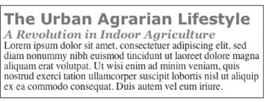
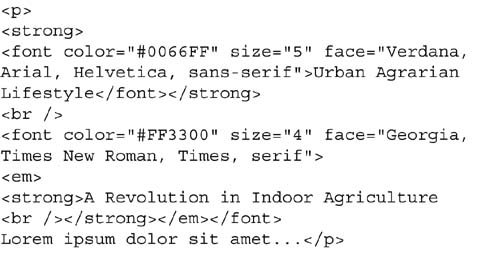
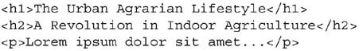
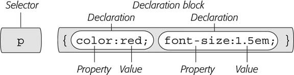
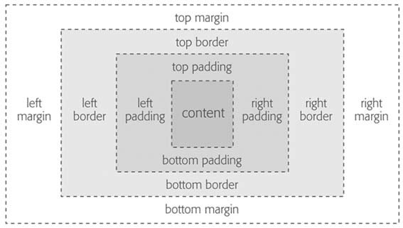

Let's start from CSS.
What is CSS?
Cascading Style Sheets. 级联样式表单。
Nothing New.
Generally accepted. Widely used.
Why is CSS used?
Several reasons:
- separation of content/structure from presentation.
- independent format file. once, and for all.
What is HTML then?
Brief history
developed by Tim Berners-Lee for more convenient file sharing and cross-linking. It stands for Hypertext Markup Language. A language which is meant to describe the structure and content of your document.
When did <table/> used for layout start?
Two reasons:
- HTML is weak, in doing layout.
- CSS doesn't come along. and after it did show up, it does not involve capability of layout. and after it did has some, little, it's not well supported.
So why this session?
To do the web the right way!
It's all cliche though.
HTML: Past & Present
Current problems
HTML Past: Whatever Looked Good
- use table to layout. well, that's not the problem. the problem is, quite a few of table involved.
- inline <font>
- table against simple lists.
-   and
- frameset. several reasons why it's bad:
- breaks link between content and url.
- hard to bookmark.
- poor cross browser support
- copy infringement.
- user may reach the frame rather than the frameset whether intended or navigated by search engine.
- messy scroll bars.
- deprecated in XHTML 1.0, removed in XHTML 1.1 with a replacement. XFrames.
What is recommended then?
HTML Present: Scaffolding for CSS
back to our title: HTML + CSS. Introducing the two mighty tag: <div> & <span>
The <div> tag and the <span> tag are like empty vessels that you fill with content.
where the hell is the so-called standard anyway?
- use CSS to style page elements. benifits.
- write neat HTML. only things you need.
- try to layout with <div> + CSS.
A checklist.
- your markup is valid. which means it has been checked against the standard.
- your markup is semantic. have appropriate HTML elements to give your content meaning.
- your markup is accessible. can be navigated & read by everyone.
- your markup is separated. the behavior and presentation has been removed.
- your site fails gracefully. will not be fked up in browsers such as ie6.
Proof
well, sort of. Assume you want a page looks like this.

spaghetti

a rather neet one

One more thing
if HTML 4.01 Transitional,
<!DOCTYPE HTML PUBLIC "-//W3C//DTD HTML 4.01 Transitional//EN" "http://www.
w3.org/TR/html4/loose.dtd">
if XHTML Transitional,
<!DOCTYPE html PUBLIC "-//W3C//DTD XHTML 1.0 Transitional//EN" "http://www.
w3.org/TR/xhtml1/DTD/xhtml1-transitional.dtd">
<html xmlns="http://www.w3.org/1999/xhtml" xml:lang="en" lang="en">
If you want more detail, please refer to my blog post `about a problem I once encountered' and the famous Quirksmode.org(actually it features a lot of things rather than several compatibility tables).
How about CSS?
the structure of CSS.

Where to write style?
external file
<link rel="stylesheet" type="text/css" href="css/global.css">
interal style
<head><style type="text/css">@import url(base.css)</style>
inline style
<p style="padding: 5px 0;">Hello world.<p>
selector
by
tag. Page-Wide Styling
h2 { font-weight: normal; }
class. Prinpoint Control
.clear { clear: both; }
id. Specific Page Elemets
#banner { background: #CC0000; }
let's move on
- Acestor. an HTML tag that wraps around another tag is its ancestor
- Descedent. A tag inside one or more tags is a descendent.
- Parent. A parent tag is the closest ancestor of another tag.
- Child. A tag that's directly enclosed by another tag is a child.
- Sibling. Tags that are children of the same tag are called siblings, just like brothers and sisters.
chaining sample
select specific item
- html body ul li a
- p .intro a { color: yellow; }
- p.intro a { color: yellow; }
Styling multiple element
- h1, h2, h3, h4, h5, h6 { color: #F1CD33; }
- h1, p, .copyright, #banner { color: #F1CD33; }
Inheritance & Cascade
will be discussed in detail with samples later.
CSS applied
Formatting text
- font
- color
- text-decoration
- line-height
- text-align
- etc.
Box mode

a few samples.
mission one: style link.
mission two: make a navigator.
mission three: layout.
Questions?
Thank you.